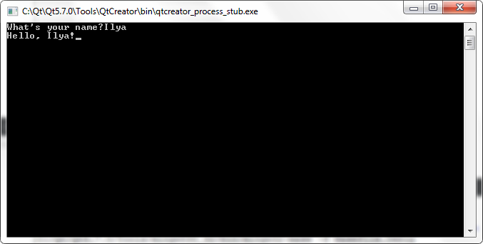

Урок C++ №3
В этом уроке вы узнаете о
переменных и вводе std::cin
Вы прочитали название урока и скорее всего удивились. Как переменные величины могут быть в компьютере? Но переменныые в программировании значат совсем другое.
Переменные- это своеобразные контейнеры, в которые вы можете поместить что-нибудь свое.
Это ящики, содержащие любые значения, которые потом программист может использовать в дальнейшем.
Засунуть в переменную значение надо так:
- переменная = значение; <-точку с запятой не забыли
Чтобы получить значение из переменной, достаточно написать ее имя.
Но мы не сможем засунуть хлеб в банку молока, или колбасу в чашку.
Переменные в С++ тоже разные, и надо в коде указывать какие они:
int целое_число;
float нецелое_число;
char символ; <-кстати символы пишут в таких ' ' кавычках
char[100] строка со 100 символами; <-помните, строки указываются в этих " " кавычках
и т.д.
Это значит, что нельзя сказать
int chislo;
chislo= 0.34;
Дело в том, что int значит целую переменную, а мы присваиваем ей дробное число.
Компьютер на это махнет рукой и приведет 0.34 к целому числу 0. Программа конечно сможет работать неправильно.
Итак, для обьявления переменной нужно написать ее тип и название. Чтобы присвоить переменной значение нужно написать имя переменной, = и значение.
Ввод переменных пользователем, std::cin
std::cin - штука, обратная std::cout.
Если cout выводит на экран, то cin вводит.
Даже скобочки std::cout<< меняются на std::cin>>.
std:: сразу значит, что cin из библиотеки iostream. Да это вообще единственная библиотека, которую вы знаете.
Чтобы взять с помощью cin ввод, нужна переменная. Это так:
- #include<iostream> <-обязательно!
-
- int main(){ <-хмм, int ничего не напоминает?
- тип переменная; <-переменную нужно указать(объявить)
- std::cin>>переменная;
- }
В итоге этой программы мы получим в переменной то, что указал пользователь.
Давайте запросим имя пользователя и сделаем ему приветствие. Попробуйте сами скомпилировать этот код:
- #include<iostream>
-
- int main(){
- char name[50];
- std::cout<<"What's your name?";
- std::cin>>name;
- std::cout<<"Hello, "<<name<<"!";
- }
Код работает отлично!
Одна проблема: немного некрасиво выглядит. Допустим, мы не хотим чтобы ввод имени был на одной строке с вопросом.
Для переноса строки в c++ есть свой особенный символ '\n'.
Вместо него можно использовать std::endl, но выглядит это громоздко
Эту задачу я оставляю вам. На этом мой урок подходит к концу.